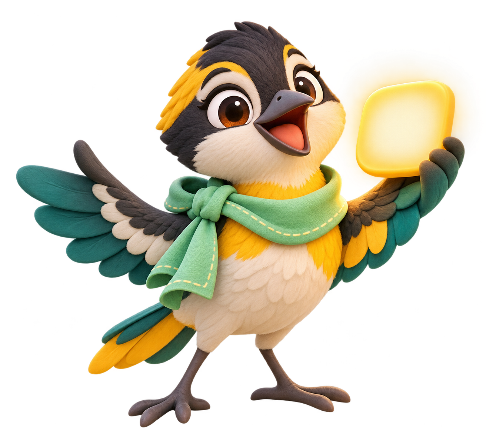

0 of 32 families explored
One family at a time. You can always come back.
A playful, teach-first journey through Tigrinya Fidel—built for short, happy learning moments.

Listen, look, trace, and grow one new Fidel flower.
Every family has seven related forms. We teach their sound, shape, words, and writing together—never as a dry list.
You listened, looked, traced, and built. A flower is growing in your Fidel garden.